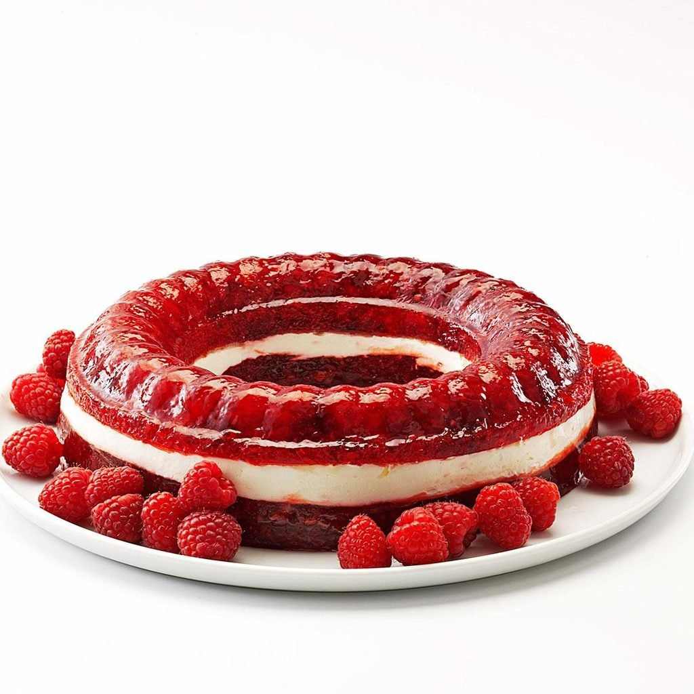

Raspberry Jello Salad
This salad made from raspberry jello is to die for, and even
though it may not look appetizing, your taste buds will prove you wrong.

Ingredients
3.4 ounce raspberry jello
1 Cup boiling water
1 Cup raspberries, thawed
1 cup applesauce
1 cup sour cream
Steps
- Stir together the jello and boiling water until the powder is all dissolved.
- Add the raspberries and applesauce and stir carefully until combined.
- Pour into a 8x9 inch pan
- Chill the jello for 3 hours until set.
- In a bowl, combine the sour cream and marshmallows and spread
on top of the jello.
- Serve immediately.
Note: This dish can be prepared up to two months in
advance without any loss of flavor or texture!